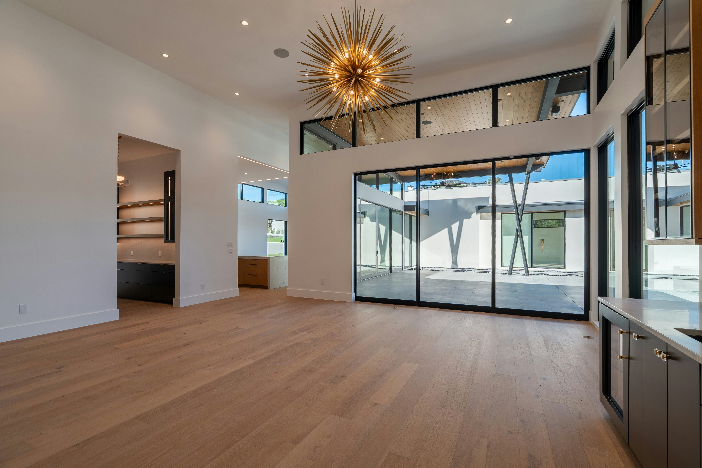
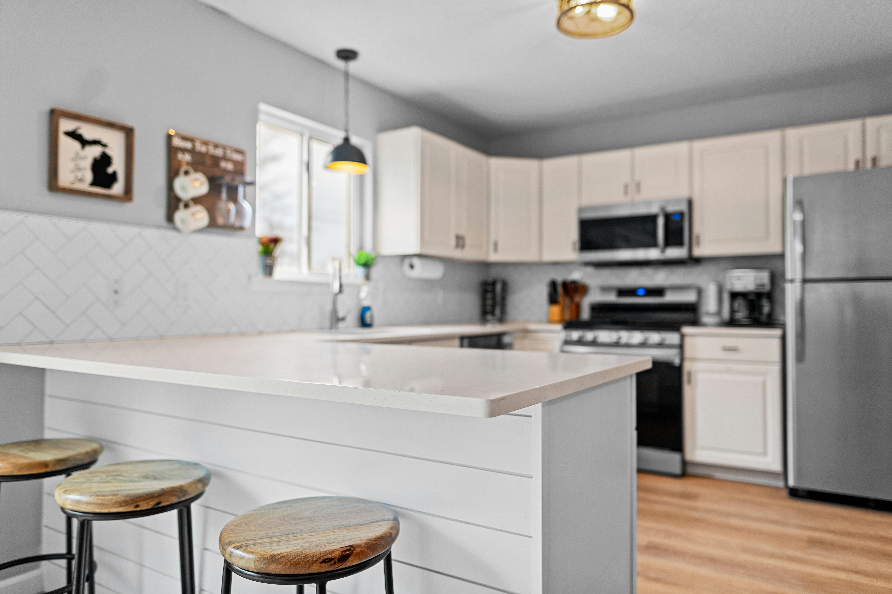
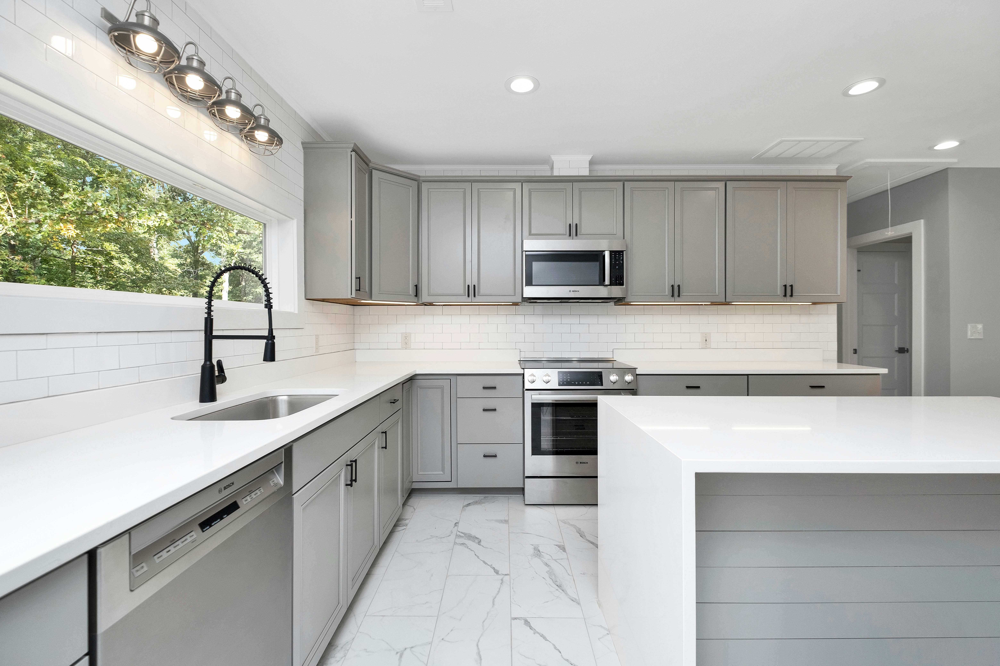

Design
The engineer sets the beam and support requirements.

Knock-throughs · steel beams · RSJs
Load-bearing wall removal and steel installation to the engineer’s design.
Support first
We support the structure before forming the opening. The specified steel is then installed, protected and made good.

What the job involves
Beam, bearings, supports and fire protection must match the design.
The engineer sets the beam and support requirements.
Temporary works carry the load while the wall is removed.
Building Control inspects before the steel is covered.

Local structural work
Serving Stourbridge, Wordsley, Kingswinford and Brierley Hill.
FAQs
Span, access and finish affect the price. We need the engineer’s design and a site visit.
Installation may take several days; preparation and making good take longer.
Yes, for most load-bearing wall changes.
Yes, in most cases. The work should be inspected before it is covered.
Wall removal is noisy and dusty. Screening and floor protection help contain it.
Planning a knock-through?